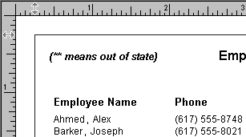
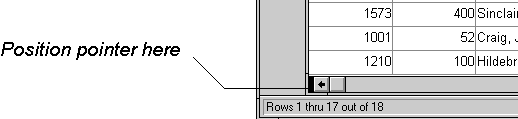

You use the Preview view of a DataWindow object to view it as it will appear with data and test the processing that takes place in it.
 To display the Preview view of a DataWindow object open
in the DataWindow painter:
To display the Preview view of a DataWindow object open
in the DataWindow painter:
If the Preview view is not already displayed, select View>Preview from the menu bar.
In the Preview view, the bars that indicate the bands do not display, and, if you selected Retrieve on Preview in the DataWindow wizard, PowerBuilder retrieves all the rows from the database. You are prompted to supply arguments if you defined retrieval arguments.
 In external DataWindow objects If the DataWindow object uses the External data source, no data is retrieved. You
can import data, as described in "Importing data into a DataWindow object".
In external DataWindow objects If the DataWindow object uses the External data source, no data is retrieved. You
can import data, as described in "Importing data into a DataWindow object".
 In DataWindow objects that have stored data If the DataWindow object has stored data in it, no data is retrieved
from the database.
In DataWindow objects that have stored data If the DataWindow object has stored data in it, no data is retrieved
from the database.
As the rows are being retrieved, the Retrieve button in the PainterBar changes to a Cancel button. You can click the Cancel button to stop the retrieval.
Test your DataWindow object.
For example, modify some data, update the database, re-retrieve rows, and so on, as described below.
PowerBuilder follows this order of precedence to supply the data in your DataWindow object:
If you do not want PowerBuilder to retrieve data from the database automatically when the Preview view opens, you can set the Retrieve on Preview option. The Preview view shows the DataWindow object without retrieving data.
 To be able to preview without retrieving data
automatically:
To be able to preview without retrieving data
automatically:
Select Design>Options from the menu bar.
The DataWindow Options dialog box displays.
Clear the Retrieve on Preview check box on the General page.
When this check box is cleared, your request to preview the DataWindow object does not result in automatic data retrieval from the database.
 Retrieve on Preview check box is available in the DataWindow wizards During the initial creation of a DataWindow object, you can set the
Retrieve on Preview option.
Retrieve on Preview check box is available in the DataWindow wizards During the initial creation of a DataWindow object, you can set the
Retrieve on Preview option.
When PowerBuilder first retrieves data, it stores the data internally. When it refreshes the Preview view, PowerBuilder displays the stored data instead of retrieving rows from the database again. This can save you a lot of time, since data retrieval can be time consuming.
Because PowerBuilder accesses the cache and does not automatically retrieve data every time you preview, you might not have what you want when you preview. The data you see in preview and the data in the database can be out of sync.
For example, if you are working with live data that changes frequently or with statistics based on changing data and you spend time designing the DataWindow object, the data you are looking at may no longer match the database. In this case, retrieve again just before printing.
You can explicitly request retrieval at any time.
 To retrieve rows from the database:
To retrieve rows from the database:
 Supplying argument values or criteria If the DataWindow object has retrieval arguments or is set up to
prompt for criteria, you are prompted to supply values for the arguments
or to specify criteria.
Supplying argument values or criteria If the DataWindow object has retrieval arguments or is set up to
prompt for criteria, you are prompted to supply values for the arguments
or to specify criteria.
PowerBuilder retrieves the rows. As PowerBuilder retrieves, the Retrieve button changes to a Cancel button. You can click the Cancel button to stop the retrieval at any time.
The Data view displays data that can be used to populate a DataWindow object. When the ShareData pop-up menu item in the Data view is checked, changes you make in the Data view are reflected in the Preview view and vice versa.
These other options can affect retrieval:
You can add, modify, or delete rows in the Preview view. When you have finished manipulating the data, you can apply the changes to the database.
You (and your users) can add or modify data in a DataWindow object in multiple input languages. If you use multiple input languages, you can display a Language bar on your desktop to change the current input language. In a DataWindow object, the input language in effect the first time a column gets focus becomes the default input language for that column. If you subsequently change the input language when that column has focus, the new input language becomes the default for that column. This behavior does not apply to columns that have the RightToLeft property set.
 If looking at data from a view or from more than one
table By default, you cannot update data in a DataWindow object that contains
a view or more than one table. For more about updating DataWindow objects, see Chapter 21, "Controlling Updates in DataWindow Objects."
If looking at data from a view or from more than one
table By default, you cannot update data in a DataWindow object that contains
a view or more than one table. For more about updating DataWindow objects, see Chapter 21, "Controlling Updates in DataWindow Objects."
 To modify existing data:
To modify existing data:
Tab to the field and enter a new value.
The Preview view uses validation rules, display formats, and edit styles that you have defined for the columns, either in the Database painter or in this particular DataWindow object.
To save the changes to the database, you must apply them, as described below.
 To add a row:
To add a row:
Click the Insert Row button.
PowerBuilder creates a blank row.
Enter data for a row.
To save the changes to the database, you must apply them, as described below.
 Adding a row in an application Clicking the Insert Row button in the Preview view is equivalent
to calling the InsertRow method and then the ScrollToRow method
at runtime.
Adding a row in an application Clicking the Insert Row button in the Preview view is equivalent
to calling the InsertRow method and then the ScrollToRow method
at runtime.
 To delete a row:
To delete a row:
Click the Delete Row button.
PowerBuilder removes the row from the display.
To save the changes to the database, you must apply them, as described below.
 Deleting a row in an application Clicking the Delete Row button in the Preview view is equivalent
to calling the DeleteRow method at runtime.
Deleting a row in an application Clicking the Delete Row button in the Preview view is equivalent
to calling the DeleteRow method at runtime.
 To apply changes to the database:
To apply changes to the database:
Click the Update Database button.
PowerBuilder updates the table with all the changes you have made.
 Applying changes in an application Clicking the Update Database button in the Preview view is
equivalent to calling the Update method at runtime.
Applying changes in an application Clicking the Update Database button in the Preview view is
equivalent to calling the Update method at runtime.
You can display information about the data you have retrieved.
 To display the row information:
To display the row information:
Select Rows>Described from the menu bar.
The Describe Rows dialog box displays, showing the number of:
All row counts are zero until you retrieve the data from the database or add a new row. The count changes when you modify the displayed data or test filter criteria.
You can import and display data from an external source and save the imported data in the database.
 To import data into a DataWindow object:
To import data into a DataWindow object:
Select Rows>Import from the menu bar.
Specify the file from which you want to import the data.
The types of files that you can import into the painter display in the List Files of Type drop-down list.
Click Open.
PowerBuilder reads the data from the file into the DataWindow painter. You can then click the Update Database button in the PainterBar to add the new rows to the database.
 Data from file must match DataWindow definition When importing data from a file, the datatypes of the data
must match, column for column, all the columns in the DataWindow definition
(the columns specified in the SELECT statement),
not just the columns that are displayed in the DataWindow object.
Data from file must match DataWindow definition When importing data from a file, the datatypes of the data
must match, column for column, all the columns in the DataWindow definition
(the columns specified in the SELECT statement),
not just the columns that are displayed in the DataWindow object.
For information about importing XML data, see Chapter 29, "Exporting and Importing XML Data."
You can print the data displayed in the Preview view. Before printing, you can preview the output on the screen. Your computer must have a default printer specified, otherwise properties handled by the printer driver, such as page orientation, are ignored.
 To preview printed output before printing:
To preview printed output before printing:
Be sure the Preview view is selected (current) and then select File>Print Preview from the menu bar.
Print Preview displays the DataWindow object as it will print.
 Using the IntelliMouse pointing device Using the IntelliMouse pointing device, users can scroll
a DataWindow object by rotating the wheel. Users can also zoom a DataWindow object larger
or smaller by holding down the Ctrl key while rotating the wheel.
Using the IntelliMouse pointing device Using the IntelliMouse pointing device, users can scroll
a DataWindow object by rotating the wheel. Users can also zoom a DataWindow object larger
or smaller by holding down the Ctrl key while rotating the wheel.
You can choose whether to display rulers around page borders.
 To control the display of rulers in Print Preview:
To control the display of rulers in Print Preview:
Select/deselect File>Print Preview Rulers from the menu bar.
You can dynamically change margins while previewing a DataWindow object.
 To change the margins in Print Preview:
To change the margins in Print Preview:
Drag the margin boundaries on the rulers.
The following picture shows the left and top margin boundaries. There are also boundaries for the right and bottom margins. The picture shows the outline of the margin. If you do not want to see the outline, clear the Print Preview Shows Outline check box on the Print Specifications page in the Properties view.

 Changing margins at runtime Using the Modify method, you can display
a DataWindow object in print preview at runtime. While in print preview,
users can also change margins by dragging boundaries. A user event
in the DataWindow control (pbm_dwnprintmarginchange) is
triggered when print margins are changed. Changing margins can affect
the page count, so if you use the Describe method to
display the page count in your application (for example, in MicroHelp),
you must code a script for the user event to recalculate the page
count.
Changing margins at runtime Using the Modify method, you can display
a DataWindow object in print preview at runtime. While in print preview,
users can also change margins by dragging boundaries. A user event
in the DataWindow control (pbm_dwnprintmarginchange) is
triggered when print margins are changed. Changing margins can affect
the page count, so if you use the Describe method to
display the page count in your application (for example, in MicroHelp),
you must code a script for the user event to recalculate the page
count.
You can reduce or enlarge the amount of the page that displays in the Print Preview view. This does not affect the printed output.
 To zoom the page on the display screen:
To zoom the page on the display screen:
Select File>Print Preview Zoom from the menu bar.
Select the magnification you want and click OK.
The display of the page zooms in or out as appropriate. The size of the contents of the page changes proportionately as you zoom. This type of zooming affects your display but does not affect printing.
In addition to zooming the display on the screen, you can also zoom the contents, affecting the amount of material that prints on a page.
 To zoom the contents of a DataWindow object with respect
to the printed page:
To zoom the contents of a DataWindow object with respect
to the printed page:
Select Design>Zoom from the menu bar.
Select the magnification you want and click OK.
The contents of the page zooms in or out as appropriate. If you enlarge the contents so they no longer fit, PowerBuilder creates additional pages as needed.
You can print a DataWindow object while the Preview view is displayed. You can print all pages, a range of pages, only the current page, or only odd or even pages. You can also specify whether you want multiple copies, collated copies, and printing to a file.
To avoid multiple blank pages and other anomalies in printed reports, no row in the DataWindow object should be larger than the size of the target page. The page boundary is often reached in long text columns with AutoSizeHeight on. It can also be reached when detail rows are combined with page and group headers and trailers, or when they contain multiple nested DataWindow objects or a column that has been resized to be larger than the page.
When a row contains large multiline edit columns, it can be broken into a series of rows, each containing one text line. These text lines become the source for a nested DataWindow object. The nested DataWindow object determines how many of its rows fit in the remaining page space.
The summary band in a report is always printed on the same page as the last row of data. This means that you sometimes find a page break before the last row of data even if there is sufficient space to print the row. If you want the last row to print on the same page as the preceding rows, the summary band must be made small enough to fit on the page as well.
You can choose File>Printer Setup from the menu bar.
 To print a DataWindow object:
To print a DataWindow object:
Select File>Print Report from the menu bar to display the Print dialog box.
Specify the number of copies to print.
Specify the pages: select All or Current Page, or type page numbers and/or page ranges in the Pages box.
Specify all pages, even pages, or odd pages in the Print drop-down list.
If you want to print to a file rather than to the printer, select the Print to File check box.
If you want to change the collating option, clear or select the Collate Copies check box and click OK.
If you specified print to file, the Print to File dialog box displays.
Enter a file name and click OK.
The extension PRN indicates that the file is prepared for the printer. Change the drive, the directory, or both, if you want.
If you are viewing a grid-style DataWindow object in the Preview view, you can make the following changes. Whatever you do in the Preview view is reflected in the Design view:
 These features are also available to your users Users of your application can also manipulate columns in these
ways in a grid DataWindow object at runtime.
These features are also available to your users Users of your application can also manipulate columns in these
ways in a grid DataWindow object at runtime.
 To resize a column in a grid DataWindow object:
To resize a column in a grid DataWindow object:
Position the mouse pointer at a column boundary in the header.
The pointer changes to a two-headed arrow.
Press and hold the left mouse button and drag the mouse to move the boundary.
Release the mouse button when the column is the correct width.
 To reorder columns in a grid DataWindow object:
To reorder columns in a grid DataWindow object:
Press and hold the left mouse button on a column heading.
PowerBuilder selects the column and displays a line representing the column border.
Drag the mouse left or right to move the column.
Release the mouse button.
 To use split horizontal scrolling in a grid DataWindow object:
To use split horizontal scrolling in a grid DataWindow object:
To divide the grid into two regions that can scroll independently of each other, position the mouse pointer at the left end of the horizontal scrollbar.

The pointer changes to a two-headed arrow.
Press and hold the left mouse button and drag the mouse to the right to create a new horizontal scrolling border.
Release the mouse button.
You now have two independent scrolling regions in the grid DataWindow object.
 To copy data to the clipboard from a grid DataWindow object:
To copy data to the clipboard from a grid DataWindow object:
Select the cells whose data you want to copy to the clipboard:
Selected cells are highlighted.
Select Edit>Copy from the menu bar.
The contents of the selected cells are copied to the clipboard. If you copied the contents of more than one column, the data is separated by tabs.